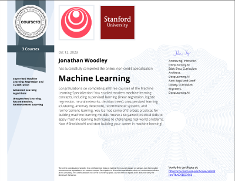
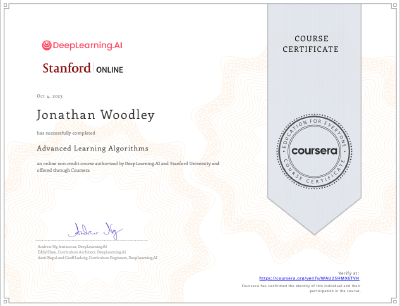
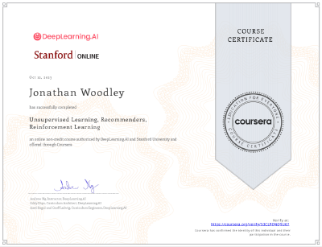
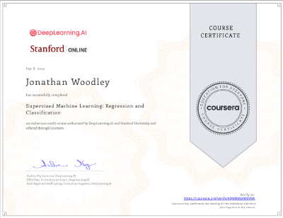
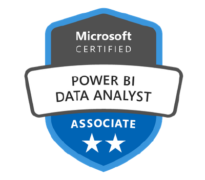
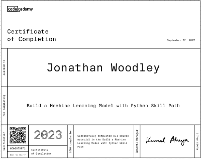

01
Agentic Systems & AI
›
Project Alfred Active
A sophisticated multi-bridge personal assistant (Discord, ESP32, Gemini Live API). Features a custom "Soul" architecture, 4-tier memory compression system, and deep Home Assistant integration for proactive estate management.
ESP32-UI Active
A data-driven smart home control panel built for the Waveshare ESP32-S3-Touch. Features dynamic UI rebuilding via MQTT, hybrid IP/Geocoding location services, and real-time environment-adaptive visuals.
TASS (Terminal Assistant)
A lightweight CLI AI assistant that translates natural language to precise shell commands with OS awareness (PowerShell/Bash) and automated model fallback logic.
Polymarket Interactive CLI
Real-time terminal dashboard for prediction markets. Interacts with the Gamma and CLOB APIs for market exploration and order book execution.
02
Machine Learning & Data Engineering
›
Comfort Zones
Generating heatmaps of "comfortable days" across Europe using 10 years of historical weather data from the Meteostat API. A focus on clean data pipelines and visualization.
flipper
A robust web scraping and data extraction utility with a Streamlit interface. Automates the gathering of dynamic web content using Selenium and BeautifulSoup.
AQI Forecasting
A professional ML lifecycle implementation using Cookiecutter Data Science. Forecasts ozone and pollutant levels using XGBoost with hyperparameter tuning via GridSearchCV.
TradeTracker
Automated system to consolidate TDAmeritrade trade executions into a Google Sheets dashboard. Handled complex multi-leg options strategy grouping.
QueryASR
A RAG-based semantic search engine for massive corporate sustainability reports. Transforms static PDFs into interactive knowledge bases using vector embeddings and Llama-index.
YouTube Video Summarizer
Full-stack Streamlit app combining OpenAI Whisper for transcription and GPT-4 for semantic summarization of video content.
AskGPT
Experimental voice-controlled personal assistant and precursor to Project Alfred. Initial exploration of GPT-4 integration, audio transcript handling, and persona-driven AI response cycles.
Data Science 2023 Cluster
A series of rigorous analytical projects including Yelp Rating Regression (170MB JSON), Twitter Virality Classification (KNN/Naive Bayes), and OKCupid Profile Analysis.
03
Sustainability & Corporate Systems
›
Climate Data Hub Active
A centralized GHG emissions ledger and dashboard for SBT-aligned corporate reporting. Developed an end-to-end pipeline in Power BI Dataflows to process 0.5m rows of annual ERP data with 100% emission-factor coverage via complex temporal logic rules.
Commute GHG Emissions Analysis
Quantified Scope 3.7 emissions for 30k+ employees by querying the Bing Maps API for commute distances and applying national statistical emission factors.
EPA Emissions Dashboard (Power BI)
Comprehensive analysis of public EPA data (2010-2021) involving 500k+ rows. Consolidated multiple data sources using Python-based ingestion scripts.
Queue Notification Systems
Developed a "polite" IT support queue using Power Apps and MS Teams to improve stakeholder visibility and triage efficiency.
04
Strategic Leadership & Learning
›
Collaboration Open House
Organized and led international service-knowledge conferences across Europe. Facilitated knowledge transfer between technical teams and thousands of global stakeholders.
Interactive Business Upskilling
Co-developed interactive training modules using Articulate 360 to upskill a business unit of 40k+ users in remote collaboration technologies.
05
Academic & Legacy
›
Habit Tracker CLI
A lightweight Python-based command-line interface for personal habit tracking. Developed as a final project for University.
Technical skillsets
Artificial intelligence
- Gemini Multimodal Live API
- RAG & vector embeddings
- Whisper & LLM integration
- Autonomous agent orchestration
Data science & ML
- Python (Pandas, Scikit-learn)
- XGBoost & MLOps pipelines
- Geospatial & emissions analysis
- SQL (PostgreSQL, SQLite3)
Data analysis & viz
- Power BI (advanced DAX)
- Power Platform (Apps/Automate)
- Google Sheets automation
- GHG Protocol & reporting
Certifications & badges






